Cluster and Correspondence Analysis in R
Martin Schweinberger
2020-09-29

Introduction
This tutorial introduces classification and clustering using R. The entire R markdown document for this tutorial can be downloaded here. A more elaborate and highly recommendable introduction to cluster analysis is Kassambara (2017). Other very useful resources are, e.g., King (2015); Kettenring (2006); Romesburg (2004); and Blashfield and Aldenderfer (1988).
Cluster analyses fall within the domain of classification methods which are used to find groups or patterns in data or to predict group membership. As such, they are widely used and applied in machine learning. For linguists, classification is not only common when it comes to phylogenetics but also in annotation-based procedures such as part-of-speech tagging and syntactic parsing.
Preparation and session set up
This tutorial is based on R. If you have not installed R or are new to it, you will find an introduction to and more information how to use R here. For this tutorials, we need to install certain packages from an R library so that the scripts shown below are executed without errors. Before turning to the code below, please install the packages by running the code below this paragraph. If you have already installed the packages mentioned below, then you can skip ahead ignore this section. To install the necessary packages, simply run the following code - it may take some time (between 1 and 5 minutes to install all of the libraries so you do not need to worry if it takes some time).
# clean current workspace
rm(list=ls(all=T))
# set options
options(stringsAsFactors = F) # no automatic data transformation
options("scipen" = 100, "digits" = 4) # suppress math annotation
# install libraries
install.packages(c("cluster", "factoextra", "cluster",
"seriation", "pvclust", "ape", "vcd",
"exact2x2", "factoextra", "seriation",
"NbClust", "pvclust"))Once you have installed R-Studio and initiated the session by executing the code shown above, you are good to go.
1 Cluster Analysis
The most common method in linguistics that is sued to detect groups in data are cluster analyses. Cluster analyses are common in linguistics because they not only detect commonalities based on the frequency or occurrence of features but they also allow to visualize when splits between groups have occurred and are thus the method of choice in historical linguistics to determine and show genealogical relationships.
Underlying Concepts
The next section focuses on the basic idea that underlies all cluster analyses. WE will have a look at some very basic examples to highlight and discuss the principles that cluster analyses rely on.
The underlying idea of cluster analysis is very simple and rather intuitive as we ourselves perform cluster analyses every day in our lives. This is so because we group things together under certain labels and into concepts. The first example used to show this, deals with types of trees and how we group these types of trees based on their outward appearance.
Imagine you see six trees representing different types of trees: a pine tree, a fir tree, an oak tree, a beech tree, a phoenix palm tree, and a nikau palm tree. Now, you were asked to group these trees according to similarity. Have a look at the plot below and see whether you would have come up with a similar type of grouping.

An alternative way to group the trees would be the following.
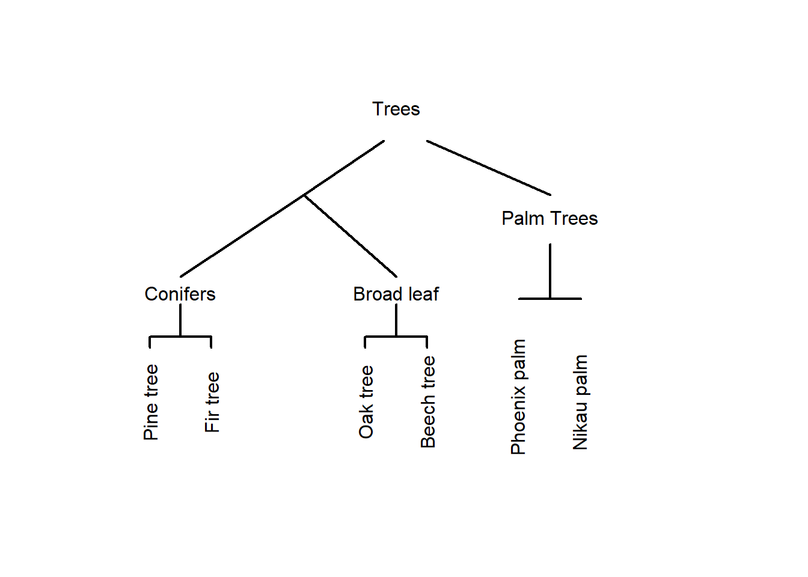
In this display, conifers and broad-leaf trees are grouped together because there are more similar to each other compared to palm trees. This poses the question of what is meant by similarity. Consider the display below.

Are the red and the blue line more similar because they have the same shape or are the red and the black line more similar because they are closer together? There is no single correct answer here. Rather the plot intends to raise awareness about the fact that how cluster analyses group data depends on how similarity is defined in the respective algorithm.
Let’s consider another example to better understand how cluster analyses determine which data points should be merged when. Imagine you have five students and want to group them together based on their overall performance in school. The data that you rely on are their grades in math, music, and biology (with 1 being the best grade and 6 being the worst).
| Math | Music | Biology | |
|---|---|---|---|
| StudentA | 2 | 3 | 2 |
| StudentB | 1 | 3 | 2 |
| StudentC | 1 | 2 | 1 |
| StudentD | 2 | 4 | 4 |
| StudentE | 3 | 4 | 3 |
The first step in determining the similarity among students is to create a distance matrix.
diststudents <- dist(students, method = "manhattan") # create a distance matrixThe distance matrix below shows that Student A and Student B only differ by one grade. Student B and Student C differ by 2 grades. Student A and Student C differ by 3 grades and so on.
| StudentA | StudentB | StudentC | StudentD | |
|---|---|---|---|---|
| StudentB | 1 | |||
| StudentC | 3 | 2 | ||
| StudentD | 3 | 4 | 6 | |
| StudentE | 3 | 4 | 6 | 2 |
Based on this distance matrix, we can now implement a cluster analysis in R.
Cluster Analysis on Numeric Data
To create a simple cluster object in R, we use the “hclust” function from the “cluster” package. The resulting object is then plotted to create a dendrogram which shows how students have been amalgamated (combined) by the clustering algorithm (which, in the present case, is called “ward.D”).
# activate library
library("cluster")
library("factoextra")
library("seriation")
library("NbClust")
library("pvclust")
# create hierarchical cluster object with ward.D as linkage method
clusterstudents <- hclust(diststudents, method="ward.D")
# plot result as dendrogram
plot(clusterstudents, hang = 0)
Let us have a look at how the clustering algorithm has amalgamated the students. The amalgamation process takes the distance matrix from above as a starting point and, in a first step, has merged Student A and Student B (because they were the most similar students in the data based on the distance matrix). After collapsing Student A and Student B, the resulting distance matrix looks like the distance matrix below (notice that Student A and Student B now form a cluster that is represented by the means of the grades of the two students).
students2 <- matrix(c(1.5, 3, 2, 1, 2, 1, 2, 4, 4, 3, 4, 3),
nrow = 4, byrow = T)
students2 <- as.data.frame(students2)
rownames(students2) <- c("Cluster1", "StudentC", "StudentD", "StudentE")
diststudents2 <- dist(students2, method = "manhattan")| Cluster 1 | Student C | Student D | |
|---|---|---|---|
| Student C | 2.5 | ||
| Student D | 3.5 | 6.0 | |
| Student E | 3.5 | 6.0 | 2.0 |
The next lowest distance now is 2.0 between Student D and Student E which means that these two students are merged next. The resulting distance matrix is shown below.
students3 <- matrix(c(1.5,3,2,1,2,1,2.5,4,3.5),
nrow = 3, byrow = T)
students3 <- as.data.frame(students3)
rownames(students3) <- c("Cluster1", "StudentC", "Cluster2")
diststudents3 <- dist(students3,
method = "manhattan")| Cluster 1 | Student C | |
|---|---|---|
| Student C | 2.5 | |
| Cluster 2 | 3.5 | 6.0 |
Now, the lowest distance value occurs between Cluster 1 and Student C. Thus, Student C and Cluster 1 are merged. In the final step, the Cluster 2 is merged with the new cluster encompassing Student C and Cluster 1. This amalgamation process can then be displayed visually as a dendrogram (see above).
How and which elements are merged depends on the what is understood as distance. Since “distance” is such an important concept in cluster analyses, we will briefly discuss this notion to understand why there are so many different types of clustering algorithms and this cluster analyses.
Distance and Similarity Measures
To understand how a cluster analysis determines to which cluster a given data point belongs, we need to understand what different distance measures represent. Have a look at the Figure below which visually represents three different ways to conceptualize distance.
par(mar=c(1,1,1,1)) # define margine width of the plot
x <- c(1,5) # define an x value
y <- c(1,5) # define a y value
plot(x, y,
pch = 20,
cex = 1,
axes = F,
las = 1,
xlab = "",
ylab = "",
xlim = c(0,7),
ylim = c(0,10))
text(0.5, .5, "Point A", cex = 1)
text(5, 5.5, "Point B", cex = 1)
lines(x = c(1, 5), y = c(1, 5), type = "l", lty = 3, lwd = 2, col = "red")
lines(x = c(1, 5), y = c(1, 1), type = "l", lty = 2, lwd = 2, col = "blue")
lines(x = c(5, 5), y = c(1, 5), type = "l", lty = 4, lwd = 2, col = "green")
lines(x = c(.9, 5), y = c(.9, .9), type = "l", lty = 4, lwd = 2, col = "green")
legend("topleft", inset=.05, title="", bty = "n", lty = c(3, 2, 4), lwd = 2,
c("euclidean distance", "maximum distance", "manhatten distance"), col=c("red", "blue", "green"), horiz=F, cex = 1)
par(mar=c(5.1,4.1,4.1,2.1))The Figure above depicts three ways to measure distance: the “eucledian distance” represents the distance between points as the hypothenuse of the x- and y-axis distances while the “maximum distance” represents distance as the longer distance of either the distance on the x- or the y-axis. The manhatten distance (or block distance) is the sum of the distances on the x- and the y-axis.
We will now turn to another example in order to delve a little deeper into how clustering algorithms work. In this example, we will find cluster of varieties of English based on the relative frequency of selected non-standard features (such as the relative frequencies of cleft constructions and tag questions). As a first step, we generate some fictional data set for this analysis.
# generate data
IrishEnglish <- round(sqrt((rnorm(10, 9.5, .5))^2), 3)
ScottishEnglish <- round(sqrt((rnorm(10, 9.3, .4))^2), 3)
BritishEnglish <- round(sqrt((rnorm(10, 6.4, .7))^2), 3)
AustralianEnglish <- round(sqrt((rnorm(10, 6.6, .5))^2), 3)
NewZealandEnglish <- round(sqrt((rnorm(10, 6.5, .4))^2), 3)
AmericanEnglish <- round(sqrt((rnorm(10, 4.6, .8))^2), 3)
CanadianEnglish <- round(sqrt((rnorm(10, 4.5, .7))^2), 3)
JamaicanEnglish <- round(sqrt((rnorm(10, 1.4, .2))^2), 3)
PhillipineEnglish <- round(sqrt((rnorm(10, 1.5, .4))^2), 3)
IndianEnglish <- round(sqrt((rnorm(10, 1.3, .5))^2), 3)
clus <- data.frame(IrishEnglish, ScottishEnglish, BritishEnglish,
AustralianEnglish, NewZealandEnglish, AmericanEnglish,
CanadianEnglish, JamaicanEnglish, PhillipineEnglish, IndianEnglish)
# add row names
rownames(clus) <- c("nae_neg", "like", "clefts", "tags", "youse", "soitwas", "dt", "nsr", "invartag", "wh_cleft")
# inspect results
summary(clus) ## IrishEnglish ScottishEnglish BritishEnglish AustralianEnglish
## Min. :9.004 Min. :8.814 Min. :5.153 Min. :5.683
## 1st Qu.:9.207 1st Qu.:9.207 1st Qu.:6.355 1st Qu.:6.292
## Median :9.477 Median :9.335 Median :6.840 Median :6.644
## Mean :9.465 Mean :9.333 Mean :6.652 Mean :6.688
## 3rd Qu.:9.775 3rd Qu.:9.555 3rd Qu.:7.210 3rd Qu.:6.969
## Max. :9.842 Max. :9.609 Max. :7.648 Max. :7.736
## NewZealandEnglish AmericanEnglish CanadianEnglish JamaicanEnglish
## Min. :5.647 Min. :3.914 Min. :2.951 Min. :1.158
## 1st Qu.:6.151 1st Qu.:4.276 1st Qu.:3.778 1st Qu.:1.245
## Median :6.512 Median :4.522 Median :4.527 Median :1.313
## Mean :6.455 Mean :4.739 Mean :4.194 Mean :1.346
## 3rd Qu.:6.698 3rd Qu.:4.876 3rd Qu.:4.749 3rd Qu.:1.425
## Max. :7.279 Max. :6.038 Max. :4.923 Max. :1.642
## PhillipineEnglish IndianEnglish
## Min. :0.3820 Min. :0.574
## 1st Qu.:0.9677 1st Qu.:0.976
## Median :1.4880 Median :1.272
## Mean :1.3247 Mean :1.418
## 3rd Qu.:1.6098 3rd Qu.:1.799
## Max. :1.9490 Max. :2.731As a next step, we create a cluster object based on the data we have just generated.
# clean data
clust <- t(clus) # transpose data
clust <- na.omit(clust) # remove missing values
clusts <- scale(clust) # standardize variables
clusts <- as.matrix(clusts) # convert into matrix
clust## nae_neg like clefts tags youse soitwas dt nsr invartag
## IrishEnglish 9.827 9.649 9.364 9.569 9.154 9.386 9.004 9.034 9.817
## ScottishEnglish 9.312 8.814 9.359 9.595 9.226 9.535 9.115 9.609 9.562
## BritishEnglish 5.153 7.251 7.648 5.412 6.703 6.239 6.930 6.749 7.085
## AustralianEnglish 6.750 6.243 7.736 6.567 6.440 7.611 6.721 6.086 7.042
## NewZealandEnglish 6.711 6.937 5.647 6.536 7.279 6.658 6.145 6.169 6.488
## AmericanEnglish 4.464 4.801 5.927 4.309 4.265 4.901 3.914 4.580 6.038
## CanadianEnglish 4.652 4.859 2.951 4.923 3.742 3.092 4.781 4.447 3.887
## JamaicanEnglish 1.393 1.642 1.158 1.243 1.328 1.231 1.299 1.251 1.477
## PhillipineEnglish 1.198 0.382 1.949 0.746 1.458 1.920 1.627 1.518 1.558
## IndianEnglish 2.731 2.030 0.912 1.185 0.857 0.574 1.915 1.168 1.452
## wh_cleft
## IrishEnglish 9.842
## ScottishEnglish 9.200
## BritishEnglish 7.353
## AustralianEnglish 5.683
## NewZealandEnglish 5.976
## AmericanEnglish 4.193
## CanadianEnglish 4.608
## JamaicanEnglish 1.436
## PhillipineEnglish 0.891
## IndianEnglish 1.360We now assess if data is clusterable by testing whether or not the data includes nonrandom structures. To means to determine whether the data contains nonrandomness, we calculate the Hopkins statistic which informs how similar the data is to a random distribution. If the values of the Hopkins statistic are higher than 0.5 then this indicates that the data is random and that there are no inherent clusters. However, if the Hopkins statistic is close to 0, then the data is clusterable. The “n” in the “get_clust_tendency” functions represents the maximum number of clusters to be tested which should be number of predictors in the data.
library("factoextra") # load library to extract cluster tendency
clusttendency <- get_clust_tendency(clusts, # apply get_clust_tendency to cluster object
n = 9, # define number of points from sampe speace
gradient = list(low = "steelblue", # define color for low values
high = "white")) # define color for high values
clusttendency[1]## $hopkins_stat
## [1] 0.737918As the Hopkins statistic above shows, there is sufficient structure in the data and we can assume that there are actual clusters in the data. Next, we create a distance matrix based on Euclidian distances.
clustd <- dist(clusts, # create distance matrix
method = "euclidean") # use eucledian (!) distance
round(clustd, 2) # display distance matrix## IrishEnglish ScottishEnglish BritishEnglish AustralianEnglish
## ScottishEnglish 0.43
## BritishEnglish 2.98 2.85
## AustralianEnglish 2.89 2.73 1.01
## NewZealandEnglish 3.07 2.94 1.07 0.83
## AmericanEnglish 4.83 4.69 2.12 2.05
## CanadianEnglish 5.31 5.19 2.70 2.73
## JamaicanEnglish 8.17 8.04 5.38 5.40
## PhillipineEnglish 8.22 8.07 5.43 5.41
## IndianEnglish 8.08 7.96 5.35 5.34
## NewZealandEnglish AmericanEnglish CanadianEnglish
## ScottishEnglish
## BritishEnglish
## AustralianEnglish
## NewZealandEnglish
## AmericanEnglish 1.97
## CanadianEnglish 2.37 1.32
## JamaicanEnglish 5.16 3.45 2.97
## PhillipineEnglish 5.23 3.48 3.13
## IndianEnglish 5.09 3.44 2.84
## JamaicanEnglish PhillipineEnglish
## ScottishEnglish
## BritishEnglish
## AustralianEnglish
## NewZealandEnglish
## AmericanEnglish
## CanadianEnglish
## JamaicanEnglish
## PhillipineEnglish 0.59
## IndianEnglish 0.57 0.95Below are other methods to cerate distance matrices.
# create distance matrix (eucledian method: not good when dealing with many dimensions)
clustd <- dist(clusts, method = "euclidean")
# create distance matrix (maximum method: here the difference between points dominates)
clustd_maximum <- round(dist(clusts, method = "maximum"), 2)
# create distance matrix (manhattan method: most popular choice)
clustd_manhatten <- round(dist(clusts, method = "manhattan"), 2)
# create distance matrix (canberra method: for count data only - focuses on small differences and neglects larger differences)
clustd_canberra <- round(dist(clusts, method = "canberra"), 2)
# create distance matrix (binary method: for binary data only!)
clustd_binary <- round(dist(clusts, method = "binary"), 2)
# create distance matrix (minkowski method: is not a true distance measure)
clustd_minkowski <- round(dist(clusts, method = "minkowski"), 2)
# distance method for words: daisy (other possible distances are "manhattan" and "gower")
library(cluster)
clustd_daisy <- round(daisy(clusts, metric = "euclidean"), 2) If you call the individual distance matrices, you will see that depending on which distance measure is used, the distance matrices differ dramatically! Have a look at the distance matrix created using the manhatten metric and compare it to the distance matrix created using the Euclidian metric (see above).
clustd_maximum ## IrishEnglish ScottishEnglish BritishEnglish AustralianEnglish
## ScottishEnglish 0.27
## BritishEnglish 1.56 1.39
## AustralianEnglish 1.30 1.15 0.53
## NewZealandEnglish 1.21 1.12 0.61 0.63
## AmericanEnglish 1.79 1.78 1.03 0.96
## CanadianEnglish 1.94 1.96 1.42 1.45
## JamaicanEnglish 2.82 2.73 1.97 1.99
## PhillipineEnglish 2.98 2.73 2.21 1.88
## IndianEnglish 2.67 2.76 2.04 2.14
## NewZealandEnglish AmericanEnglish CanadianEnglish
## ScottishEnglish
## BritishEnglish
## AustralianEnglish
## NewZealandEnglish
## AmericanEnglish 0.95
## CanadianEnglish 1.11 0.90
## JamaicanEnglish 1.88 1.44 1.19
## PhillipineEnglish 2.10 1.42 1.44
## IndianEnglish 2.02 1.52 1.16
## JamaicanEnglish PhillipineEnglish
## ScottishEnglish
## BritishEnglish
## AustralianEnglish
## NewZealandEnglish
## AmericanEnglish
## CanadianEnglish
## JamaicanEnglish
## PhillipineEnglish 0.40
## IndianEnglish 0.45 0.53Next, we create a distance plot using the “distplot” function. If the distance plot shows different regions (non-random, non-uniform grey areas) then clustering the data is permittable as the data contains actual structures.
# load library
library(seriation)
# create distance plot
dissplot(clustd) 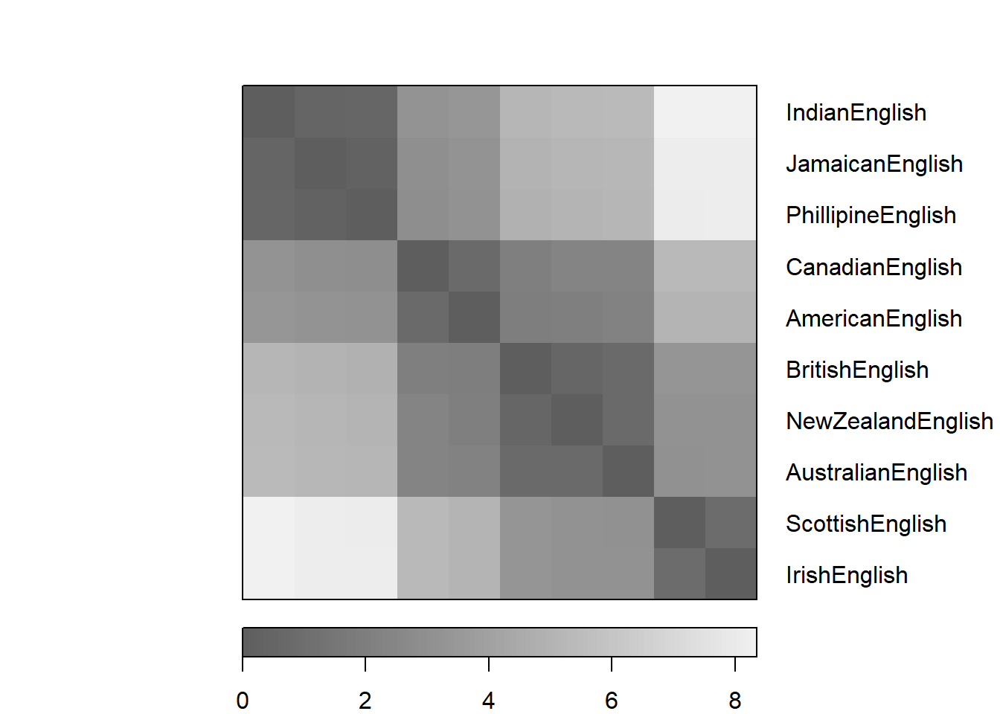
The most common method for clustering is called “ward.D” or “ward.D2”. Both of these linkage functions seek to minimize variance. This means that they cluster in a way that the amount of variance is at a minimum (comparable to the regression line in an ordinary least squares (OLS) design).
# create cluster object
cd <- hclust(clustd, method="ward.D2")
# display dendogram
plot(cd, hang = -1) 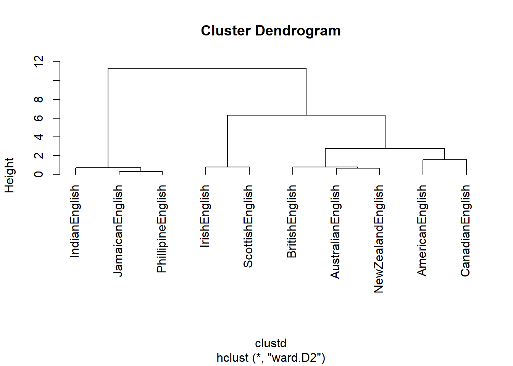
We will briefly go over some other, alternative linkage methods. Which linkage method is and should be used depends on various factors, for example, the type of variables (nominal versus numeric) or whether the focus should be placed on commonalities or differences.
# single linkage: cluster with nearest data point
cd_single <- hclust(clustd, method="single")
# create cluster object (ward.D linkage)
cd_wardd <- hclust(clustd, method="ward.D")
# create cluster object (ward.D2 linkage):
# cluster in a way to achieve minimum variance
cd_wardd2 <- hclust(clustd, method="ward.D2")
# average linkage: cluster with closest mean
cd_average <- hclust(clustd, method="average")
# mcquitty linkage
cd_mcquitty <- hclust(clustd, method="mcquitty")
# median linkage: cluster with closest median
cd_median <- hclust(clustd, method="median")
# centroid linkage: cluster with closest prototypical point of target cluster
cd_centroid <- hclust(clustd, method="centroid")
# complete linkage: cluster with nearest/furthest data point of target cluster
cd_complete <- hclust(clustd, method="complete") Now, we determine the optimal number of clusters based on silhouette widths which shows the ratio of internal similarity of clusters against the similarity between clusters. If the silhouette widths have values lower than .2 then this indicates that clustering is not appropriate (Levshina 2015, 311). The function below displays the silhouette width values of 2 to 8 clusters.
optclus <- sapply(2:8, function(x) summary(silhouette(cutree(cd, k = x), clustd))$avg.width)
optclus # inspect results## [1] 0.5749136 0.6291383 0.6640209 0.5570907 0.4405094 0.2534828 0.2111441optnclust <- which(optclus == max(optclus)) # determine optimal number of clusters
groups <- cutree(cd, k=optnclust) # cut tree into optimal number of clustersThe optimal number of clusters is the cluster solution with the highest silhouette width. We cut the tree into the optimal number of clusters and plot the result.
groups <- cutree(cd, k=optnclust) # cut tree into optimal clusters
plot(cd, hang = -1, cex = .75) # plot result as dendrogram
rect.hclust(cd, k=optnclust, border="red") # draw red borders around clusters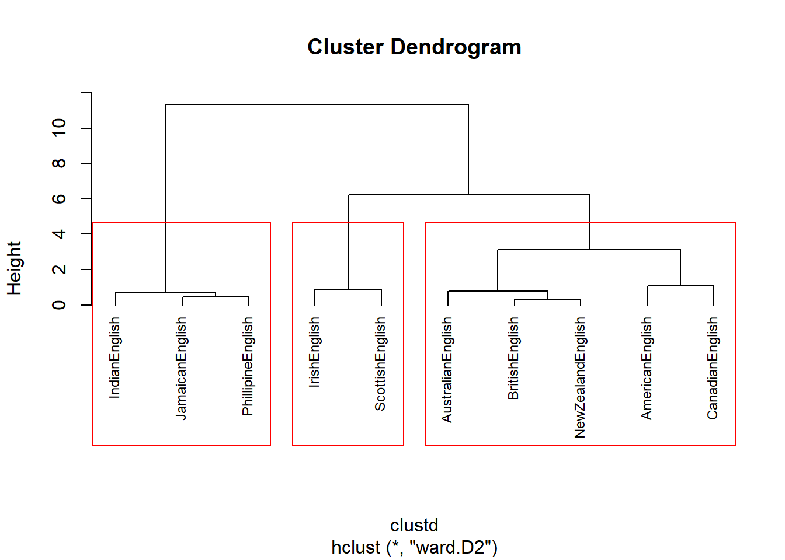
In a next step, we aim to determine which factors are particularly important for the clustering - this step is comparable to measuring the effect size in inferential designs.
# which factors are particularly important
celtic <- clusts[c(1,2),]
others <- clusts[-c(1,2),]
# calculate column means
celtic.cm <- colMeans(celtic)
others.cm <- colMeans(others)
# calcualte difference between celtic and other englishes
diff <- celtic.cm - others.cm
sort(diff, decreasing = F)## clefts like youse soitwas invartag dt nsr wh_cleft
## 1.550972 1.593405 1.633135 1.648707 1.661453 1.677501 1.738740 1.749675
## tags nae_neg
## 1.766859 1.818863plot(sort(diff), # y-values
1:length(diff), # x-values
type= "n", # plot type (empty)
cex.axis = .75, # axis font size
cex.lab = .75, # label font size
xlab ="Prototypical for Non-Celtic Varieties (Cluster 2) <-----> Prototypical for Celtic Varieties (Cluster 1)", # x-axis label
yaxt = "n", # no y-axis tick marks
ylab = "") # no y-axis label
text(sort(diff), 1:length(diff), names(sort(diff)), cex = .75) # plot text into plot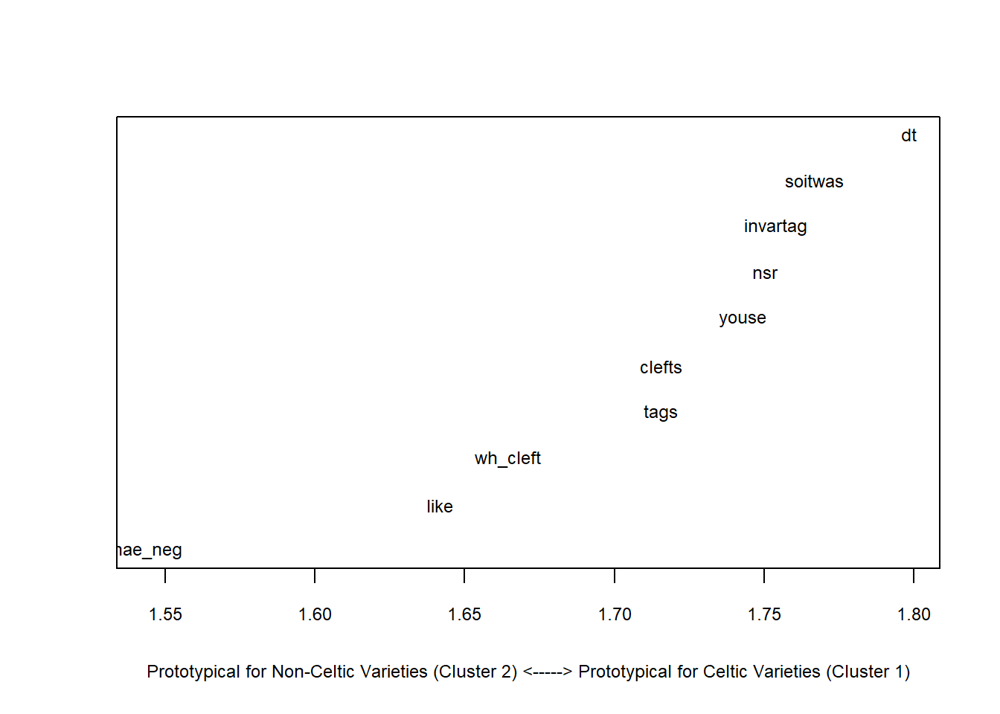
Outer <- clusts[c(6:8),] # data of outer circle varieties
Inner <- clusts[-c(6:8),] # data of inner circle varieties
Outer.cm <- colMeans(Outer) # column means for outer circle
Inner.cm <- colMeans(Inner) # column means for inner circle
diff <- Outer.cm - Inner.cm # difference between inner and outer circle
sort(diff, decreasing = F) # order difference between inner and outer circle## dt soitwas youse clefts nae_neg nsr wh_cleft
## -0.8883228 -0.8845106 -0.8706870 -0.8306956 -0.8199838 -0.7626418 -0.7350057
## invartag like tags
## -0.7328745 -0.6849308 -0.6697043plot( # start plot
sort(diff), # y-values
1:length(diff), # x-values
type= "n", # plot type (empty)
cex.axis = .75, # axis font size
cex.lab = .75, # label font size
xlab ="Prototypical for Inner Circle Varieties (Cluster 2) <-----> Prototypical for Outer Circle Varieties (Cluster 1)", # x-axis label
yaxt = "n", # no y-axis tick marks
ylab = "") # no y-axis label
text(sort(diff), 1:length(diff), names(sort(diff)), cex = .75) # plot text into plot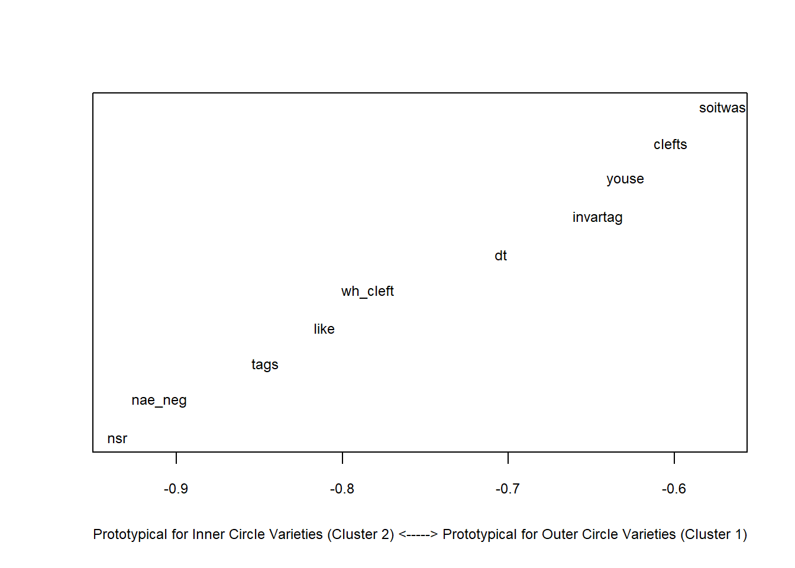
We see that discourse like is typical for other varieties and that the use of youse as 2nd person plural pronoun and invariant tags are typical for Celtic Englishes.
We will now test whether the cluster is justified by validating the cluster solution using bootstrapping.
library(pvclust) # activate library
res.pv <- pvclust(clus, # apply pvclust method to clus data
method.dist="euclidean", # use eucledian distance
method.hclust="ward.D2", # use ward.d2 linkage
nboot = 100) # use 100 bootstrap runs## Bootstrap (r = 0.5)... Done.
## Bootstrap (r = 0.6)... Done.
## Bootstrap (r = 0.7)... Done.
## Bootstrap (r = 0.8)... Done.
## Bootstrap (r = 0.9)... Done.
## Bootstrap (r = 1.0)... Done.
## Bootstrap (r = 1.1)... Done.
## Bootstrap (r = 1.2)... Done.
## Bootstrap (r = 1.3)... Done.
## Bootstrap (r = 1.4)... Done.The clustering provides approximately unbiased p-values and bootstrap probability value (see ???).
plot(res.pv,
cex = .75)
pvrect(res.pv)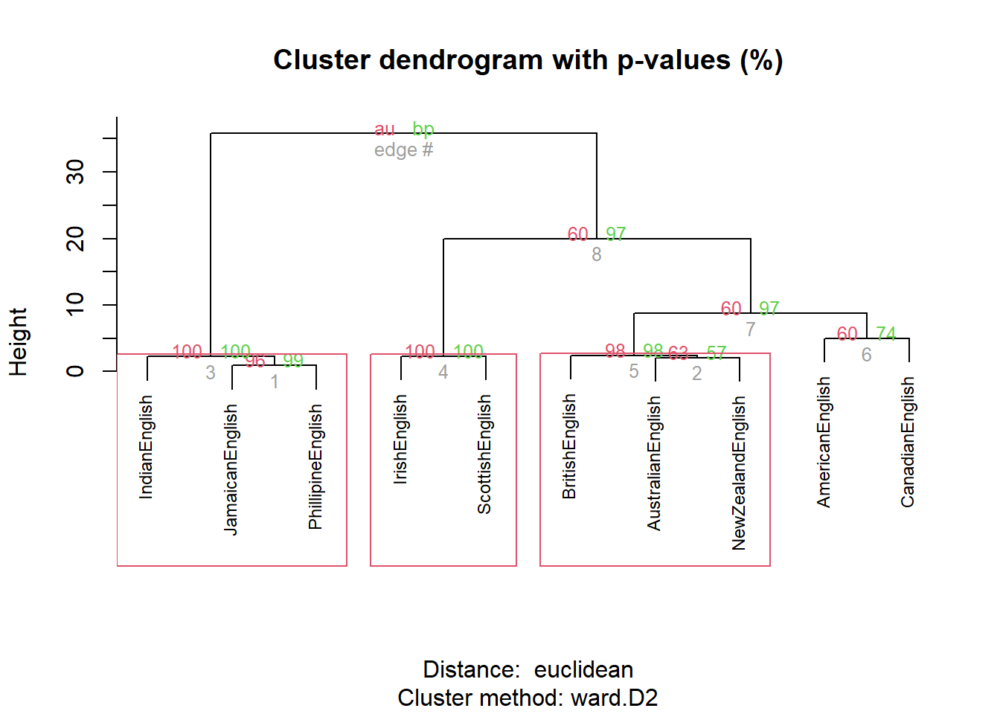
We can alsouse other libraries to customize the dendrograms.
library(ape) # load package ape
plot(as.phylo(cd), # plot cluster object
cex = 0.75, # .75 font size
label.offset = .5) # .5 label offset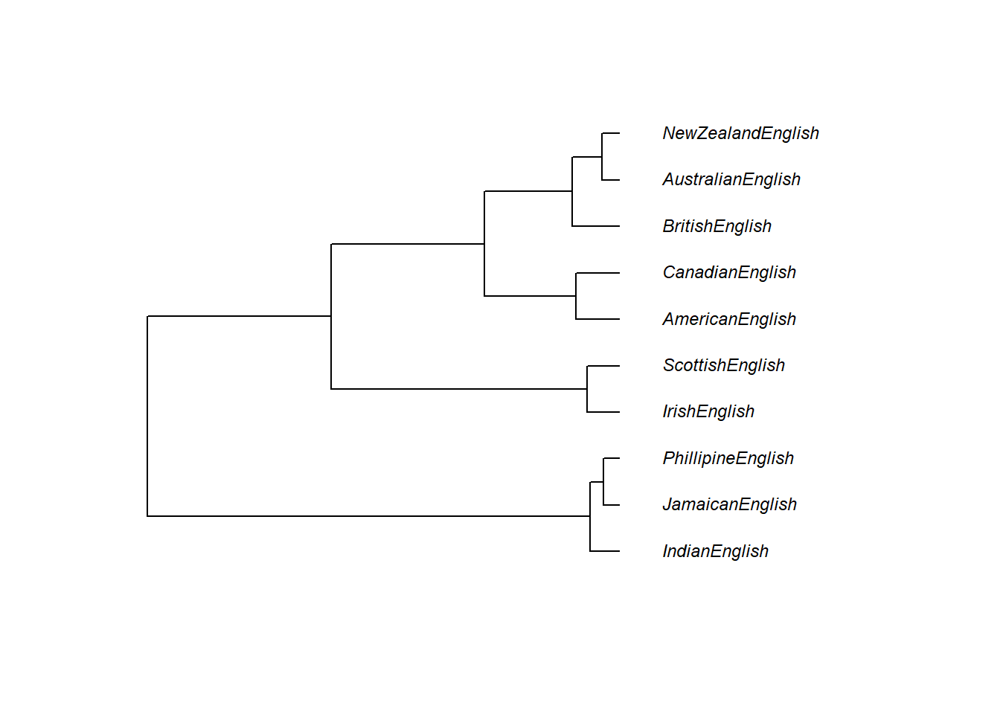
One useful customization is to display an unrooted rather than a rooted tree diagram.
# plot as unrooted tree
plot(as.phylo(cd), # plot cluster object
type = "unrooted", # plot as unrooted tree
cex = .75, # .75 font size
label.offset = 1) # .5 label offset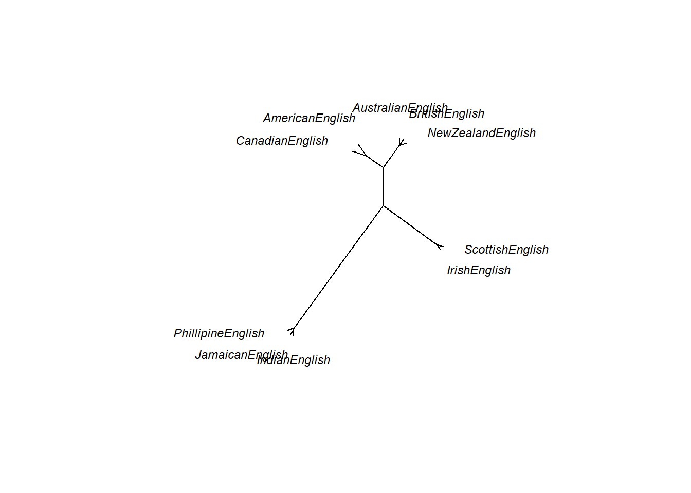
Cluster Analysis on Nominal Data
So far, all analyses were based on numeric data. However, especially when working with language data, the data is nominal or categorical rather than numeric. The following will thus show to implement a clustering method for nominal data.
In a first step, we will create a simple data set representing the presence and absence of features across varities of English.
# generate data
IrishEnglish <- c(1,1,1,1,1,1,1,1,1,1)
ScottishEnglish <- c(1,1,1,1,1,1,1,1,1,1)
BritishEnglish <- c(0,1,1,1,0,0,1,0,1,1)
AustralianEnglish <- c(0,1,1,1,0,0,1,0,1,1)
NewZealandEnglish <- c(0,1,1,1,0,0,1,0,1,1)
AmericanEnglish <- c(0,1,1,1,0,0,0,0,1,0)
CanadianEnglish <- c(0,1,1,1,0,0,0,0,1,0)
JamaicanEnglish <- c(0,0,1,0,0,0,0,0,1,0)
PhillipineEnglish <- c(0,0,1,0,0,0,0,0,1,0)
IndianEnglish <- c(0,0,1,0,0,0,0,0,1,0)
clus <- data.frame(IrishEnglish, ScottishEnglish, BritishEnglish,
AustralianEnglish, NewZealandEnglish, AmericanEnglish,
CanadianEnglish, JamaicanEnglish, PhillipineEnglish, IndianEnglish)
# add row names
rownames(clus) <- c("nae_neg", "like", "clefts", "tags", "youse", "soitwas", "dt", "nsr", "invartag", "wh_cleft")
# convert into factors
clus <- apply(clus, 1, function(x){
x <- as.factor(x) })
# inspect data
clus## nae_neg like clefts tags youse soitwas dt nsr invartag
## IrishEnglish "1" "1" "1" "1" "1" "1" "1" "1" "1"
## ScottishEnglish "1" "1" "1" "1" "1" "1" "1" "1" "1"
## BritishEnglish "0" "1" "1" "1" "0" "0" "1" "0" "1"
## AustralianEnglish "0" "1" "1" "1" "0" "0" "1" "0" "1"
## NewZealandEnglish "0" "1" "1" "1" "0" "0" "1" "0" "1"
## AmericanEnglish "0" "1" "1" "1" "0" "0" "0" "0" "1"
## CanadianEnglish "0" "1" "1" "1" "0" "0" "0" "0" "1"
## JamaicanEnglish "0" "0" "1" "0" "0" "0" "0" "0" "1"
## PhillipineEnglish "0" "0" "1" "0" "0" "0" "0" "0" "1"
## IndianEnglish "0" "0" "1" "0" "0" "0" "0" "0" "1"
## wh_cleft
## IrishEnglish "1"
## ScottishEnglish "1"
## BritishEnglish "1"
## AustralianEnglish "1"
## NewZealandEnglish "1"
## AmericanEnglish "0"
## CanadianEnglish "0"
## JamaicanEnglish "0"
## PhillipineEnglish "0"
## IndianEnglish "0"Now that we have our data, we will create a distance matrix but in contrast to previous methods, we will use a different distance measure that takes into account that we are dealing with nominal (or binary) data.
# clean data
clusts <- as.matrix(clus)
# create distance matrix
clustd <- dist(clusts, method = "binary") # create a distance object with binary (!) distance
# display distance matrix
round(clustd, 2)## IrishEnglish ScottishEnglish BritishEnglish AustralianEnglish
## ScottishEnglish 0.00
## BritishEnglish 0.40 0.40
## AustralianEnglish 0.40 0.40 0.00
## NewZealandEnglish 0.40 0.40 0.00 0.00
## AmericanEnglish 0.60 0.60 0.33 0.33
## CanadianEnglish 0.60 0.60 0.33 0.33
## JamaicanEnglish 0.80 0.80 0.67 0.67
## PhillipineEnglish 0.80 0.80 0.67 0.67
## IndianEnglish 0.80 0.80 0.67 0.67
## NewZealandEnglish AmericanEnglish CanadianEnglish
## ScottishEnglish
## BritishEnglish
## AustralianEnglish
## NewZealandEnglish
## AmericanEnglish 0.33
## CanadianEnglish 0.33 0.00
## JamaicanEnglish 0.67 0.50 0.50
## PhillipineEnglish 0.67 0.50 0.50
## IndianEnglish 0.67 0.50 0.50
## JamaicanEnglish PhillipineEnglish
## ScottishEnglish
## BritishEnglish
## AustralianEnglish
## NewZealandEnglish
## AmericanEnglish
## CanadianEnglish
## JamaicanEnglish
## PhillipineEnglish 0.00
## IndianEnglish 0.00 0.00As before, we can now use hierarchical clustering to display the results as a dendrogram
# create cluster object (ward.D2 linkage) : cluster in a way to achieve minimum variance
cd <- hclust(clustd, method="ward.D2")
# plot result as dendrogram
plot(cd, hang = -1) # display dendogram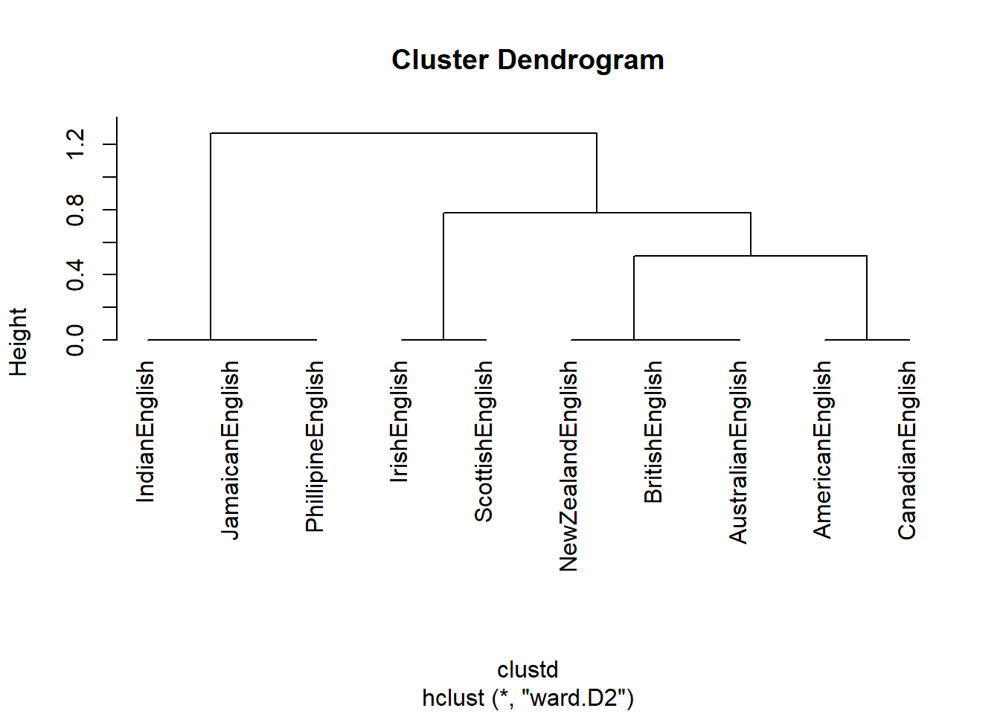
In a next step, we want to determine which features are particularly distinctive for one cluster (the “Celtic” cluster containing Irish and Scottish English).
# create factor with celtic varieties on one hand and other varieties on other
cluster <- as.factor(ifelse(as.character(rownames(clusts)) == "IrishEnglish", "1",
ifelse(as.character(rownames(clusts)) == "ScottishEnglish", "1", "0")))
# load library
library(vcd)
clsts.df <- as.data.frame(clusts)
# determine significance
library(exact2x2)
pfish <- fisher.exact(table(cluster, clsts.df$youse))
pfish[[1]]## [1] 0.02222222# determine effect size
assocstats(table(cluster, clsts.df$youse))## X^2 df P(> X^2)
## Likelihood Ratio 10.008 1 0.0015586
## Pearson 10.000 1 0.0015654
##
## Phi-Coefficient : 1
## Contingency Coeff.: 0.707
## Cramer's V : 1assocstats(table(cluster, clsts.df$like))## X^2 df P(> X^2)
## Likelihood Ratio 1.6323 1 0.20139
## Pearson 1.0714 1 0.30062
##
## Phi-Coefficient : 0.327
## Contingency Coeff.: 0.311
## Cramer's V : 0.327Clustering is a highly complex topic and there many more complexities to it. However, this should have helped to get you started.
2 Correspondence Analysis
Correspondence analysis (CA) represents a multivariate statistical technique that provides a graphic method of exploring the relationship between variables in a contingency table. CA is conceptually similar to principal component analysis (PCA), but applies to categorical rather than continuous data.
CA consists out of the following four steps:
- Computing row and column averages
- Computing expected values
- Computing the residuals
- Plotting residuals
In this tutorial, we investigate similarities among amplifiers based on their co-occurrences (word embeddings) with adjectives. Adjective amplifiers are elements such as those in 1. to 5.
- The veryamplifier niceadjective man.
- A truelyamplifier remarkableadjective woman.
- He was reallyamplifier hesitantadjective.
- The child was awefullyamplifier loudadjective.
- The festival was soamplifier amazingadjective!
The similarity among adjective amplifiers can then be used to find clusters or groups of amplifiers that behave similarly and are interchangeable. To elaborate, adjective amplifiers are interchangeable with some variants but not with others (consider 6. to 8.; the question mark signifies that the example is unlikely to be used or grammatically not acceptable by L1 speakers of English).
- The veryamplifier niceadjective man.
- The reallyamplifier niceadjective man.
- ?The completelyamplifier niceadjective man.
We start by loading the required packages, the data, and then displaying the data which is called “vsmdata” and consist of 5,000 observations of adjectives and contains two columns: one column with the adjectives (Adjectives) and another column which has the amplifiers (“0” means that the adjective occurred without an amplifier).
# load packages
library(dplyr)##
## Attaching package: 'dplyr'## The following objects are masked from 'package:stats':
##
## filter, lag## The following objects are masked from 'package:base':
##
## intersect, setdiff, setequal, unionlibrary(FactoMineR)
library(factoextra)
library(gplots)##
## Attaching package: 'gplots'## The following objects are masked from 'package:seriation':
##
## bluered, greenred## The following object is masked from 'package:stats':
##
## lowesslibrary(DT)
# load data
vsmdata <- read.delim("https://slcladal.github.io/data/vsmdata.txt", sep = "\t", header = T)
# inspect data
datatable(vsmdata, rownames = FALSE, filter="top", options = list(pageLength = 5, scrollX=T))For this tutorial, we will reduce the number of amplifiers and adjectives and thus simplify the data to render it easier to understand what is going on. To simplify the data, we remove
- all non-amplified adjectives
- the adjectives many and much
- adjectives that are amplified less than 10 times
In addition, we collapse all amplifiers that occur less than 20 times into a bin category (other).
# simplify data
vsmdata_simp <- vsmdata %>%
# remove non-amplifier adjectives
dplyr::filter(Amplifier != 0,
Adjective != "many",
Adjective != "much") %>%
# collapse infrequent amplifiers
dplyr::group_by(Amplifier) %>%
dplyr::mutate(AmpFreq = dplyr::n()) %>%
dplyr::ungroup() %>%
dplyr::mutate(Amplifier = ifelse(AmpFreq > 20, Amplifier, "other")) %>%
# collapse infrequent adjectives
dplyr::group_by(Adjective) %>%
dplyr::mutate(AdjFreq = dplyr::n()) %>%
dplyr::ungroup() %>%
dplyr::mutate(Adjective = ifelse(AdjFreq > 10, Adjective, "other")) %>%
dplyr::filter(Adjective != "other") %>%
dplyr::select(-AmpFreq, -AdjFreq)
# inspect data
datatable(vsmdata_simp, rownames = FALSE, filter="top", options = list(pageLength = 5, scrollX=T))We now use a balloon plot to see if tehre are any potential correlations between amplifiers and adjectives.
# 1. convert the data as a table
dt <- as.matrix(table(vsmdata_simp))
# 2. Graph
balloonplot(t(dt), main ="vsmdata_simp", xlab ="", ylab="",
label = FALSE, show.margins = FALSE)
The balloon plot suggests that there are potential correlations as the dots (balloons) are not distributed evenly according to frequency. To validate if there is significant correlation between the amplifier types and the adjectives using a \(\chi\)2- test.
chisq <- chisq.test(dt)## Warning in chisq.test(dt): Chi-squared approximation may be incorrectchisq##
## Pearson's Chi-squared test
##
## data: dt
## X-squared = 124.4, df = 40, p-value = 1.375e-10The \(\chi\)2- test confirms that there is a significant correlations between amplifier types and the adjectives.
res.ca <- CA(dt, graph = FALSE)
# inpsect results of the CA
#print(res.ca)
eig.val <- get_eigenvalue(res.ca)
eig.val## eigenvalue variance.percent cumulative.variance.percent
## Dim.1 0.24138007 49.868237 49.86824
## Dim.2 0.14687839 30.344536 80.21277
## Dim.3 0.06125177 12.654392 92.86716
## Dim.4 0.03452547 7.132836 100.00000The display of the eigenvalues provides information on the amount of variance that is explained by each dimension. The first dimension explains 49.87 percent of the variance, the second dimension explains another 30.34 percent of the variance, leaving all other variables with relative moderate explanatory power as they only account for 20 percent variance. We now plot and interpret the results of the CA.
# repel= TRUE to avoid text overlapping (slow if many point)
fviz_ca_biplot(res.ca,
repel = TRUE,
col.row = "orange",
col.col = "darkgray")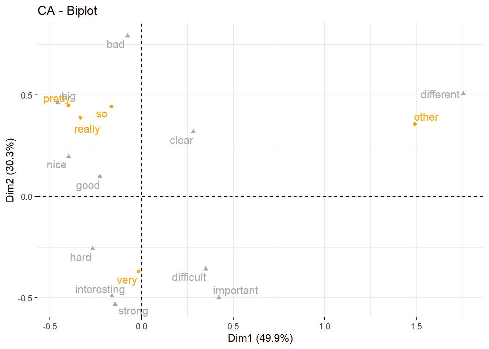
The results of the CA show that the adjective different is collocating with other amplifiers while very is collocating with difficult and important, pretty is collocating with big, really is collocating with nice, and so is collocating with bad.
Citation & Session Info
Schweinberger, Martin. 2020. Cluster and Correspondence Analysis in R. Brisbane: The University of Queensland. url: https://slcladal.github.io/groupingstatz.html (Version 2020/09/25).
@manual{schweinberger2020clust,
author = {Schweinberger, Martin},
title = {Cluster and Correspondence Analysis in R},
note = {https://slcladal.github.io/groupingstatz.html},
year = {2020},
organization = "The University of Queensland, Australia. School of Languages and Cultures},
address = {Brisbane},
edition = {2020/09/23}
}sessionInfo()## R version 4.0.2 (2020-06-22)
## Platform: x86_64-w64-mingw32/x64 (64-bit)
## Running under: Windows 10 x64 (build 18362)
##
## Matrix products: default
##
## locale:
## [1] LC_COLLATE=German_Germany.1252 LC_CTYPE=German_Germany.1252
## [3] LC_MONETARY=German_Germany.1252 LC_NUMERIC=C
## [5] LC_TIME=German_Germany.1252
##
## attached base packages:
## [1] grid stats graphics grDevices utils datasets methods
## [8] base
##
## other attached packages:
## [1] DT_0.15 gplots_3.1.0 FactoMineR_2.3 dplyr_1.0.2
## [5] exact2x2_1.6.5 exactci_1.3-3 ssanv_1.1 vcd_1.4-8
## [9] ape_5.4-1 pvclust_2.2-0 NbClust_3.0 seriation_1.2-8
## [13] factoextra_1.0.7 ggplot2_3.3.2 cluster_2.1.0 knitr_1.30
##
## loaded via a namespace (and not attached):
## [1] viridis_0.5.1 tidyr_1.1.2 jsonlite_1.7.1
## [4] viridisLite_0.3.0 foreach_1.5.0 carData_3.0-4
## [7] gtools_3.8.2 highr_0.8 cellranger_1.1.0
## [10] yaml_2.2.1 ggrepel_0.8.2 pillar_1.4.6
## [13] backports_1.1.10 lattice_0.20-41 glue_1.4.2
## [16] digest_0.6.25 ggsignif_0.6.0 colorspace_1.4-1
## [19] htmltools_0.5.0 plyr_1.8.6 pkgconfig_2.0.3
## [22] broom_0.7.0 haven_2.3.1 purrr_0.3.4
## [25] scales_1.1.1 openxlsx_4.2.2 rio_0.5.16
## [28] tibble_3.0.3 car_3.0-9 generics_0.0.2
## [31] farver_2.0.3 ellipsis_0.3.1 ggpubr_0.4.0
## [34] withr_2.3.0 readxl_1.3.1 magrittr_1.5
## [37] crayon_1.3.4 evaluate_0.14 nlme_3.1-148
## [40] MASS_7.3-51.6 forcats_0.5.0 foreign_0.8-80
## [43] rstatix_0.6.0 data.table_1.13.0 tools_4.0.2
## [46] registry_0.5-1 hms_0.5.3 lifecycle_0.2.0
## [49] stringr_1.4.0 munsell_0.5.0 zip_2.1.1
## [52] flashClust_1.01-2 compiler_4.0.2 caTools_1.18.0
## [55] rlang_0.4.7 iterators_1.0.12 htmlwidgets_1.5.1
## [58] crosstalk_1.1.0.1 leaps_3.1 labeling_0.3
## [61] bitops_1.0-6 rmarkdown_2.3 gtable_0.3.0
## [64] codetools_0.2-16 abind_1.4-5 curl_4.3
## [67] TSP_1.1-10 reshape2_1.4.4 R6_2.4.1
## [70] gridExtra_2.3 zoo_1.8-8 KernSmooth_2.23-17
## [73] dendextend_1.14.0 stringi_1.5.3 parallel_4.0.2
## [76] Rcpp_1.0.5 vctrs_0.3.4 gclus_1.3.2
## [79] scatterplot3d_0.3-41 tidyselect_1.1.0 xfun_0.16
## [82] lmtest_0.9-38References
Blashfield, Roger K, and Mark S Aldenderfer. 1988. “The Methods and Problems of Cluster Analysis.” In Handbook of Multivariate Experimental Psychology, 447–73. Springer.
Kassambara, Alboukadel. 2017. Practical Guide to Cluster Analysis in R: Unsupervised Machine Learning. Vol. 1. Sthda.
Kettenring, Jon R. 2006. “The Practice of Cluster Analysis.” Journal of Classification 23 (1): 3–30.
King, Ronald S. 2015. Cluster Analysis and Data Mining: An Introduction. Stylus Publishing, LLC.
Levshina, Natalia. 2015. How to Do Linguistics with R: Data Exploration and Statistical Analysis. Amsterdam: John Benjamins.
Romesburg, Charles. 2004. Cluster Analysis for Researchers. Lulu. com.